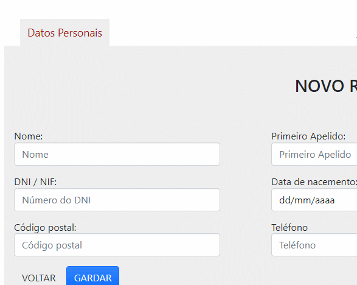
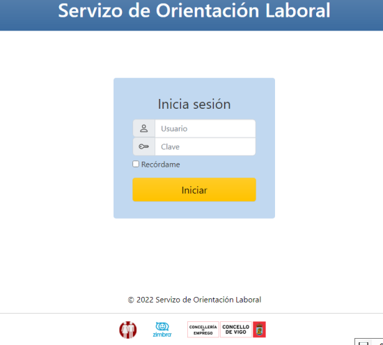
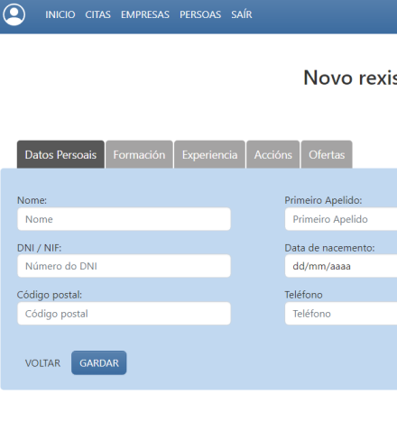
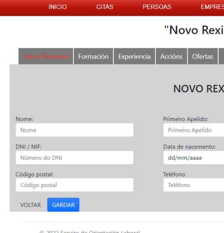
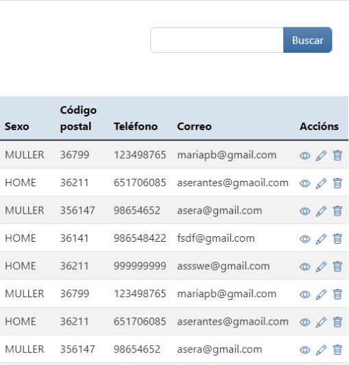
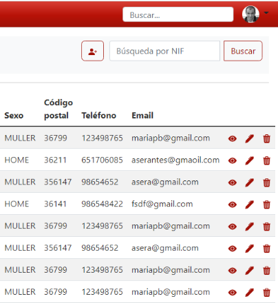

Maqueta 2.0
Formaweb IV — Mostra de cambios.
Actualizacións e feedback.
Modal para seccións
Cada sección individual corresponde a unha modal distinta.
De esta maneira permítese unha navegación fluida sen a necesidade de cambiar de páxina nin recargar os elementos. Cada sección está debidamente diferenciada para axudar a unha navegación usable.


Características principais
Deseño máis corporativo vs máis cálido
- Rede social
- Horizontalidade
- Compacto


Características principais
Deseño máis corporativo vs máis cálido
- Botones redondos
- Interactividade
- Compacto


Características principais
Deseño máis corporativo vs máis cálido
- Vermellos clicables
- Chamada a acción
- Consistente